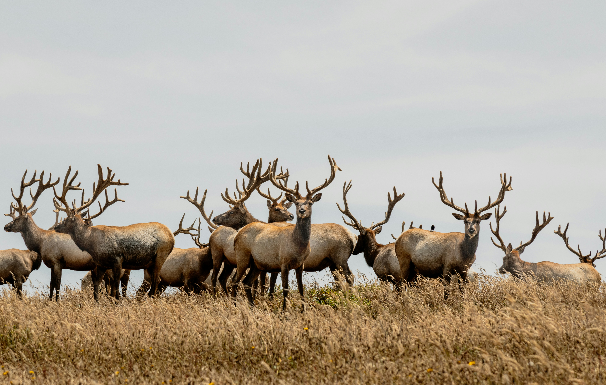
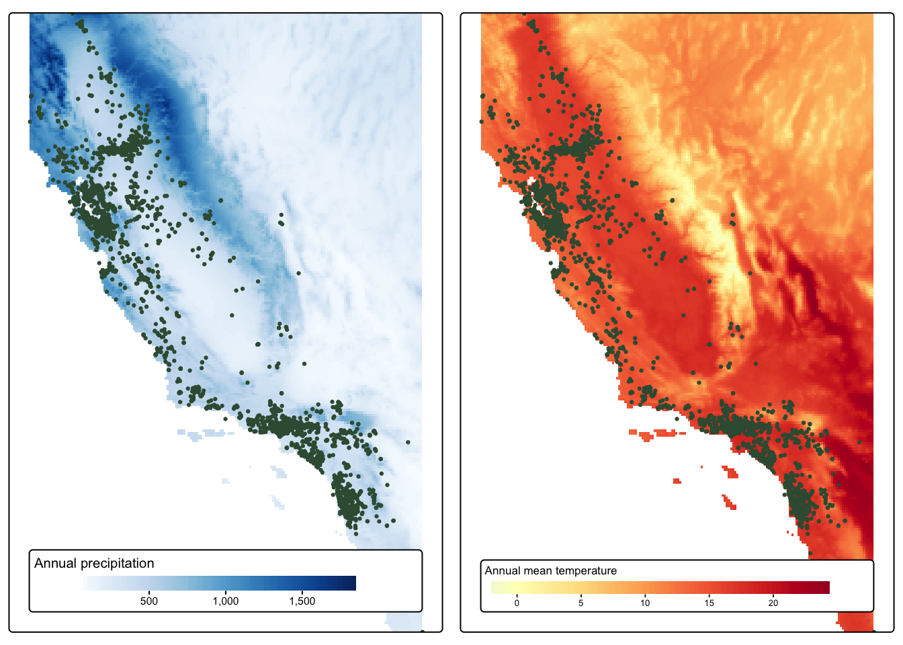
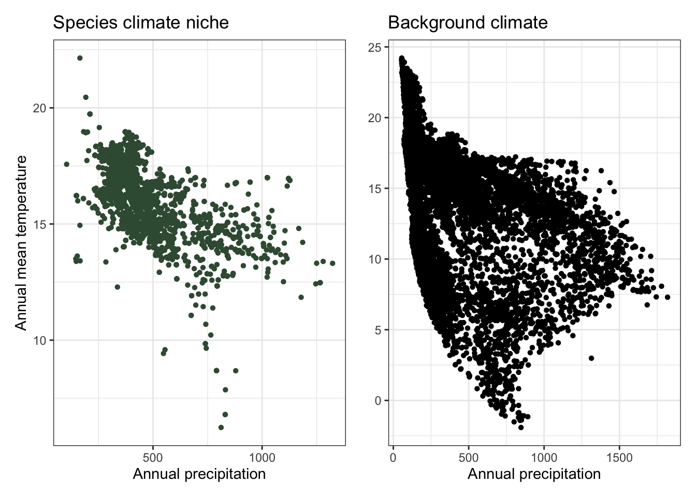
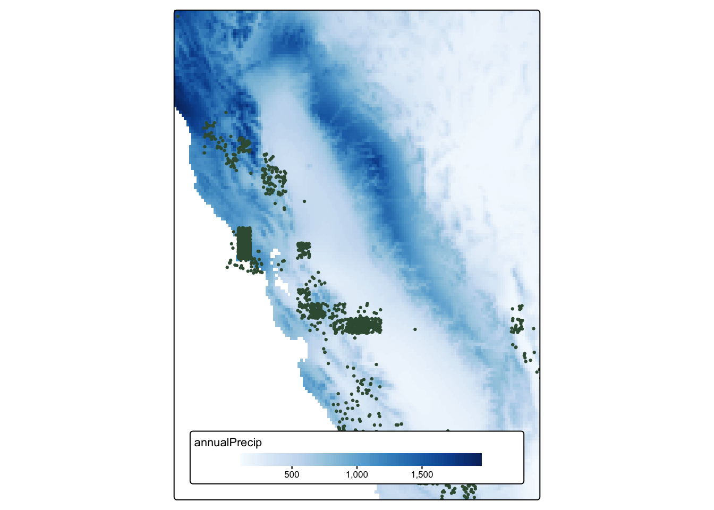
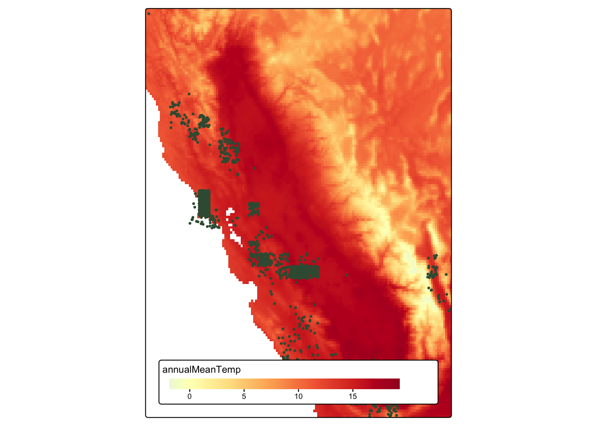
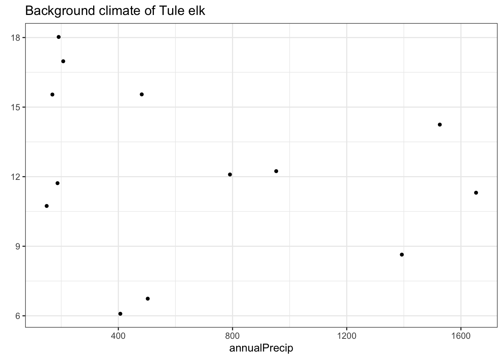

Photo by Hari Nandakumar on Unsplash
Source materials
The following materials are modified from Leander Anderegg’s niche modeling exercise.
Climate envelope models map where a species currently lives based on its climate conditions, then project where those conditions will exist under future climate scenarios. The key concern is whether suitable climate conditions will still exist anywhere or if a species’ climate envelope will shrink entirely. This threat is particularly acute for endemic species that are restricted to narrow geographic ranges.
Two California examples illustrate different vulnerabilities:
- Yellow-billed magpie(Pica nutalli): Audubon projects climate change will eliminate 80% of its summer range and 100% of its winter range by 2080, potentially leaving no suitable habitat (Source)
- Tule elk (Cervus canadensis nannodes): An arid-system ungulate with behavioral adaptability, with strong evidence of altering movement patterns during extreme drought; their range has become warmer and drier during the 20th century, but population has grown steadily (Source)
These simple species distribution models help identify the climate space each species occupies and the risk of losing it as climate conditions shift.This week, you will practice function making with rasters and create a generalizable workflow to determine the current climate envelope of the two species.
1. Get Started
- Create a version-controlled R Project
- Add (at least) a subfolder to your R project:
data - Create a Quarto document
Let’s load all necessary packages:
library(tidyverse)
library(sf)
library(terra)
library(tmap)
library(patchwork)You will be working with the following datasets:
- iNaturalist Research-grade Observations (via
rinat) - WorldClim version 2.1 data (via
geodata)
Next, let’s download our data. Unzip and move this to your version-controlled R Project’s data folder.
magpie <- read_csv(here::here("data", "magpie_obvs.csv"))
tule_elk <- read_csv(here::here("data", "tule_elk_obvs.csv"))
bioclim_dir <- here::here("data", "climate", "wc2.1_2.5m")
bioclim <- list.files(bioclim_dir, pattern = glob2rx("*.tif$"), full.names = TRUE)
bioclim_sort <- bioclim[
# Sort filepaths based on numeric suffix
order(
# Extract numeric suffix of filenames and convert to numeric
as.numeric(gsub(".*_(\\d+)\\.tif$", "\\1", bioclim))
)
]
bioclim_rast <- rast(bioclim_sort)2. Name raster layers
- Update the
bioclim_rastlayer names to match the Bioclimatic variables usingnames()
Solution
variables <- c("annualMeanTemp", "meanDiurnalRange", "isothermality", "tempSeasonality", "maxTempWarmMonth", "maxTempColdMonth", "tempAnnualRange", "meanTempWetQ", "meanTempDryQ", "meanTempWarmQ", "meanTempColdQ", "annualPrecip", "precipWetMonth", "precipDryMonth", "precipSeasonality", "precipWetQ", "precipDryQ", "precipWarmQ", "precipColdQ")
names(bioclim_rast) <- variables3. Find geographic extent of species occurrence and crop raster
- Use
st_as_sfto convert and find the geographic extent of species occurrence datamagpieusingst_bbox() - Crop
bioclim_rastto match the extent of species occurrence datamagpie
Solution
magpie_sf <- magpie |>
rename(long = longitude,
lat = latitude) |>
drop_na(long, lat) |>
st_as_sf(coords = c("long", "lat"), crs = 4326)
# Obtain geographic extent/bounding box of species occurrences
magpie_bbox <- st_bbox(magpie_sf)
# Crop raster to match geographic extent of species occurrences
bioclim_crop <- crop(bioclim_rast, magpie_bbox)4. Extract points from species occurrence
- Extract points from the cropped
bioclim_rastfor each occurrence inmagpie
Solution
# Extract points from raster for all species occurrences
bioClim_pts <- as_tibble(terra::extract(bioclim_crop, magpie_sf))5. Create background values and extract points
- Create “background values” by generating random sample points from the cropped
bioclim_rast - Extract points from cropped
bioclim_rastfor the background values
Solution
# Generate random sample points from raster
random_pts <- spatSample(bioclim_crop[["annualMeanTemp"]],
na.rm = TRUE, # Random sample non-NA cells
size = (nrow(magpie) * 2), # Sample size
as.points = TRUE) |> # Return SpatVector
st_as_sf()
# Extract points from raster for background values
bioClim_random_pts <- as_tibble(terra::extract(bioclim_crop, random_pts))6. Plot species climate niche
- Plot species climate niche and background climate (temperature vs. precipitation)
Solution
map_1 <- tm_shape(bioclim_crop[["annualPrecip"]]) +
tm_raster(col.scale = tm_scale_continuous(values = "Blues"),
col.legend = tm_legend(title = "Annual precipitation")) +
tm_shape(magpie_sf) +
tm_dots(fill = "#3a5a40", size = 0.15) +
tm_layout(legend.position = tm_pos_in("center", "bottom"),
legend.orientation = "landscape",
legend.bg.color = "white")
map_2 <- tm_shape(bioclim_crop[["annualMeanTemp"]]) +
tm_raster(col.scale = tm_scale_continuous(values = "-RdYlBu"),
col.legend = tm_legend(title = "Annual mean temperature")) +
tm_shape(magpie_sf) +
tm_dots(fill = "#3a5a40", size = 0.15) +
tm_layout(legend.position = tm_pos_in("center", "bottom"),
legend.orientation = "landscape",
legend.bg.color = "white")
tmap_arrange(map_1, map_2)
plot_1 <- ggplot(data = bioClim_pts, aes(x = annualPrecip, y = annualMeanTemp)) +
geom_point(shape = 16, color = "#3a5a40") +
labs(x = "Annual precipitation",
y = "Annual mean temperature",
title = "Species climate niche") +
theme_bw()
plot_2 <- ggplot(data = bioClim_random_pts, aes(x = annualPrecip, y = annualMeanTemp)) +
geom_point(shape = 16) +
labs(x = "Annual precipitation",
y = element_blank(),
title = "Background climate") +
theme_bw()
plot_1 + plot_2
7. Create generalizable workflow and apply
- Modify previous steps into a generalizable workflow for other species occurrence data
- Try your new function with species occurrence data
tule_elk
Solution
climate_envelope <- function(clim_rast, clim_var1, clim_var2, occurences, species_name){
species_name_lower <- species_name |>
str_to_lower() |>
str_replace_all(" ", "_")
occurences_sf <- occurences |>
rename(long = longitude,
lat = latitude) |>
drop_na(long) |>
st_as_sf(coords = c("long", "lat"), crs = 4326)
occurences_bbox <- st_bbox(occurences_sf)
clim_crop <- crop(clim_rast, occurences_bbox)
clim_pts <- as_tibble(extract(clim_crop, occurences_sf))
random_pts <- spatSample(clim_rast[[clim_var1]],
na.rm = TRUE,
size = (nrow(occurences) * 2),
as.points = TRUE) |>
st_as_sf()
clim_random_pts <- as_tibble(terra::extract(clim_crop, random_pts))
map_1 <- tm_shape(clim_crop[[clim_var1]]) +
tm_raster(col.scale = tm_scale_continuous(values = "Blues")) +
tm_shape(occurences_sf) +
tm_dots(fill = "#3a5a40", size = 0.15) +
tm_layout(legend.position = tm_pos_in("center", "bottom"),
legend.orientation = "landscape",
legend.bg.color = "white")
map_2 <- tm_shape(clim_crop[[clim_var2]]) +
tm_raster(col.scale = tm_scale_continuous(values = "-RdYlBu")) +
tm_shape(occurences_sf) +
tm_dots(fill = "#3a5a40", size = 0.15) +
tm_layout(legend.position = tm_pos_in("center", "bottom"),
legend.orientation = "landscape",
legend.bg.color = "white")
plot_1 <- ggplot(data = clim_pts, aes_string(x = clim_var1, y = clim_var2)) +
geom_point(shape = 16, color = "#3a5a40") +
labs(title = paste("Species climate niche of", str_to_sentence(species_name))) +
theme_bw()
plot_2 <- ggplot(data = clim_random_pts, aes_string(x = clim_var1, y = clim_var2)) +
geom_point(shape = 16) +
labs(y = element_blank(),
title = paste("Background climate of", str_to_sentence(species_name))) +
theme_bw()
assign(paste0(species_name_lower, "_map_1"), map_1, envir = .GlobalEnv)
assign(paste0(species_name_lower, "_map_2"), map_2, envir = .GlobalEnv)
assign(paste0(species_name_lower, "_plot_1"), plot_1, envir = .GlobalEnv)
assign(paste0(species_name_lower, "_plot_2"), plot_2, envir = .GlobalEnv)
}climate_envelope(clim_rast = bioclim_rast,
clim_var1 = "annualPrecip",
clim_var2 = "annualMeanTemp",
occurences = tule_elk,
species_name = "Tule Elk")
tule_elk_map_1
tule_elk_map_2
tule_elk_plot_1
tule_elk_plot_2